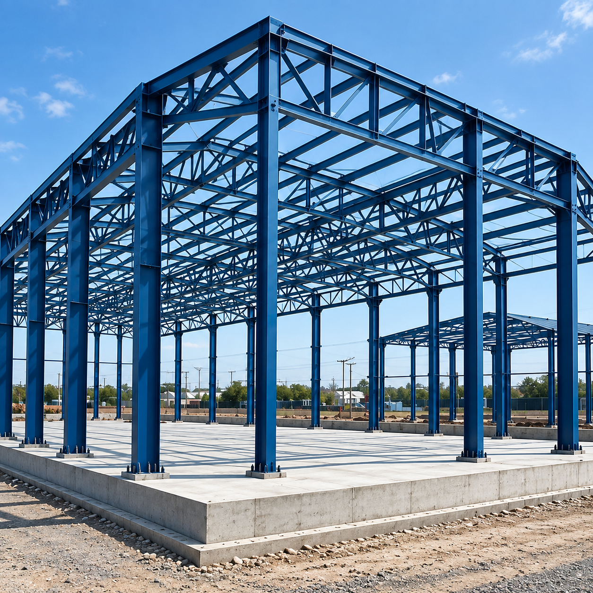

Radhe Infrastructure is an established leader in heavy structural steel fabrication, manufacturing custom components engineered for extreme structural loads, seismic zones, and corrosive industrial atmospheres across Gujarat and pan-India. Operating state-of-the-art fabrication facilities outfitted with heavy-duty overhead EOT cranes, CNC thermal profile cutting beds, and automated submerged arc welding lines, we deliver structural excellence engineered to exact design codes.
Our heavy fabrication division specializes in heavy plate girders, box columns, crane runway beams, transfer trusses, and multi-tier industrial plant framing. We utilize primary mill-certified structural steel grades including IS 2062 Grade E250 (Fe410W) and Grade E350 (Fe490), backed by heat-number traceability, ultrasonic lamination screening, and Charpy V-notch impact validation. Every weld seam is executed by qualified welders under stringent WPS/PQR procedures adhering to ASME Section IX and AWS D1.1 specifications.
Our Gujarat fabrication bays are equipped with specialized machinery designed to process heavy-gauge steel plates, thick-walled tubes, and structural profiles with microscopic accuracy.
High-definition multi-torch CNC gantry cutting tables processing plates from 6mm to 120mm thickness, delivering precision bevel edge profiles ready for critical full-penetration weld joints.
Automated column & boom submerged arc welding stations providing continuous, high-deposition, deep-penetration longitudinal welds on plate girders and heavy built-up H-beams with uniform bead geometry.
Enclosed abrasive blasting chamber and automatic roller conveyor centrifugal shot blasting reaching SA 2.5 cleanliness per ISO 8501-1, removing all mill scale, rust, and foreign contaminants.
Industrial airless spray coating with high-build zinc-rich epoxy primers, micaceous iron oxide (MIO) barrier intermediates, and polyurethane topcoats formulated for harsh C3 to C5 industrial environments.
Heavy-duty CNC multi-spindle beam drilling lines and hydraulic plate punch machines ensuring exact hole concentricity for High Strength Friction Grip (HSFG) grade 8.8 and 10.9 structural bolts.
Precision modular assembly fixtures, hydraulic clamping tables, pre-cambering jigs, and complete shop trial assemblies verifying diagonal squareness and bolt-hole matching prior to jobsite dispatch.
From power generation towers to heavy process plant frames, our structural steel frameworks provide uncompromised durability under severe dead, live, wind, and seismic loadings.
Fabrication of heavy boiler supporting structures, electrostatic precipitator (ESP) frameworks, turbine hall superstructures, and high-temperature flue gas duct supports engineered for severe thermal cycling.
Massive preheater tower framing, ball mill support structures, clinker silo feed galleries, and heavy vibration-resistant crusher foundations designed to withstand sustained dynamic machinery harmonics.
Multi-tier modular pipe racks, distillation column access platforms, reactor support towers, and equipment skids fabricated with high-yield E350 alloy steel and certified fireproofing interfaces.
Heavy steel plate girder deck bridges, rail overbridges (ROB), utility pipeline crossings, and pedestrian foot overbridges (FOB) compliant with IRC, IRS, and RDSO engineering norms.
Large clear-span rolling mill sheds, foundry buildings, and heavy fabrication shops equipped with 20T to 100T overhead crane runway beams, surge gantries, and stepped column supports.
Long-span overland conveyor trestles, transfer towers, tripper galleries, material bins, and chemical process plant framing designed for continuous round-the-clock bulk material transit.
Every metric ton of steel manufactured at Radhe Infrastructure adheres strictly to Indian (BIS) and International structural construction standards.
| Parameter | Specification / Code | Radhe Infrastructure Standard |
|---|---|---|
| Raw Material Grade | IS 2062:2011 / ASTM A36, A572 | Grade E250 (Fe410W) & Grade E350 (Fe490) with 100% Mill Test Certificates |
| Structural Design Code | IS 800:2007 (LSM / WSM) / AISC 360 | 3D structural detailing using Tekla Structures with complete erection shop drawings |
| Welding Procedures | AWS D1.1 / ASME Sec IX / IS 9595 | Prequalified WPS & PQR, qualified welders in SMAW, GMAW, FCAW, and SAW |
| Non-Destructive Testing | IS 4225, IS 3658, ASTM E165, ASTM E709 | 100% Visual + 100% DPT/MPI on fillet welds + Ultrasonic Testing (UT) on butt welds |
| Surface Preparation | ISO 8501-1 / SSPC-SP 10 | Shot Blasting to SA 2.5 cleanliness with 40-75 micron anchor profile |
| Protective Coating | IS 1477 / ISO 12944 (C3 to C5) | Epoxy Zinc Phosphate Primer (75μ) + MIO Intermediate (100μ) + Polyurethane Topcoat (50μ) |
| High-Strength Fasteners | IS 3757, IS 4000 / ASTM A325, A490 | Class 8.8 and 10.9 HSFG bolts, DTI washers, torque-controlled tightening |